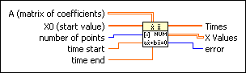

ODE Linear System Numeric VI
Owning Palette: Ordinary Differential Equations VIs
Requires: Full Development System
Solves an n-dimension, homogeneous linear system of differential equations with constant coefficients, for a given start condition.

 Add to the block diagram Add to the block diagram |
 Find on the palette Find on the palette |